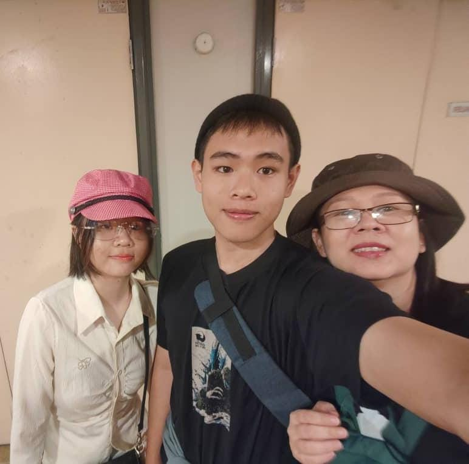
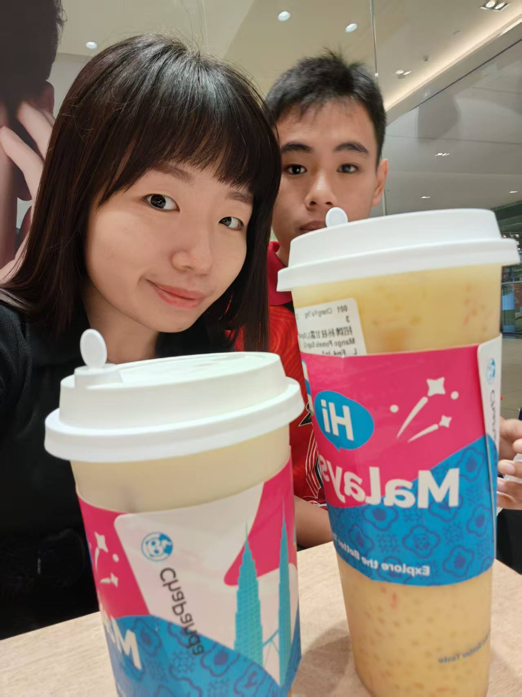
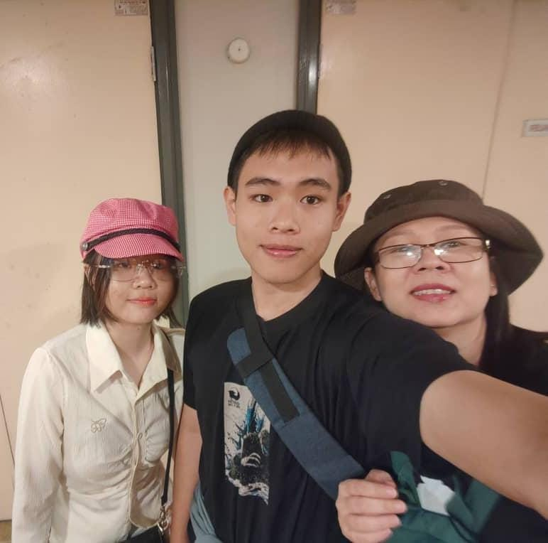
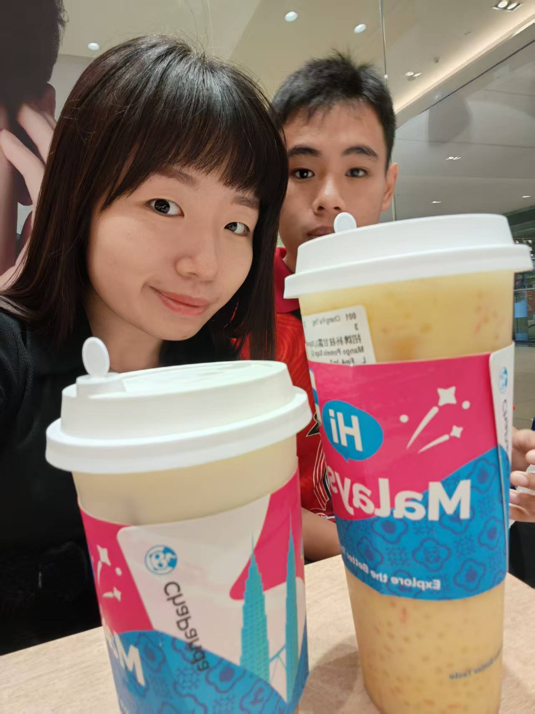

Honkai: Star Rail
My favourite video game is Honkai: Star Rail (HSR). I play it whenever I'm free. HSR is a turn-based RPG with stunning visuals, immersive storytelling, and unforgettable characters that keep me hooked every time I log in. Whether it’s exploring new worlds, grinding for relics, or pulling for my favourite characters, the game always gives me something fun to look forward to.
 


